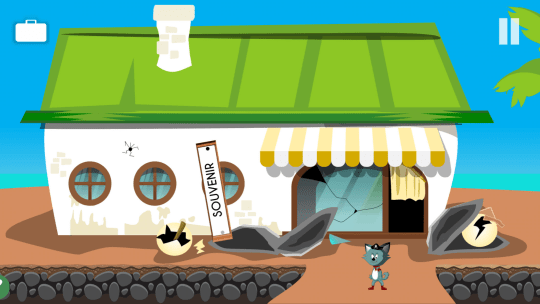
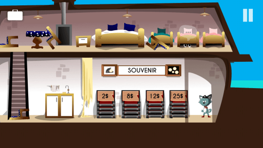
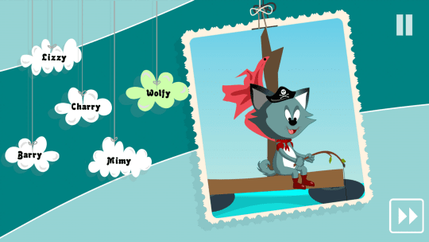

Tiny Story 2 – Jeu d’aventure point-and-click
Embarquez pour une aventure colorée et pleine de mystères ! Vos amis ont disparu, et d’étranges indices vous mènent d’île en île.
Rencontrez des personnages attachants, explorez des environnements dessinés à la main et collectez des objets qui vous aideront à progresser.
Conçu pour les appareils tactiles : touchez pour avancer, fouiller ou utiliser des objets. Pas de stress, pas de timer. Juste une expérience douce et cozy.
Si vous aimez les jeux mignons, la détente et l’exploration tranquille, Tiny Story 2 est une petite aventure parfaite pour vous.
Une aventure mignonne et charmante
Parcourez différentes îles, rencontrez des personnages adorables et découvrez la vérité derrière la disparition de vos amis.

Gameplay tactile fluide
Chaque énigme est pensée pour être intuitive sur téléphone ou tablette, uniquement avec des petites touches.

Bloqué ? Une aide gratuite
Des vidéos de walkthrough vous guident pas à pas si vous avez besoin d’un petit coup de pouce.
